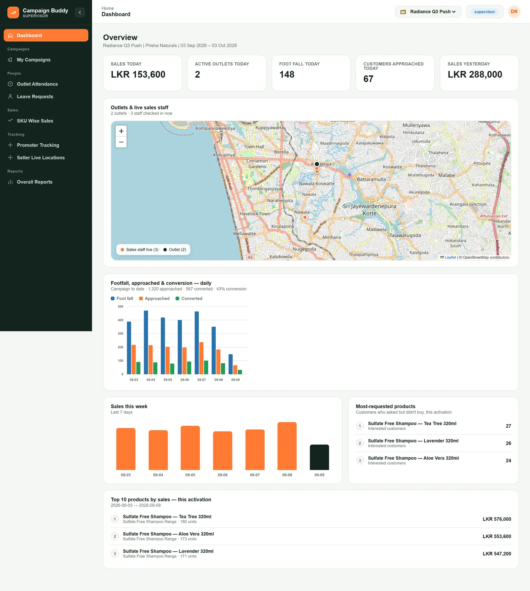
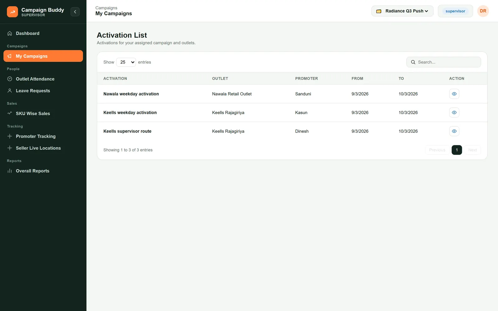
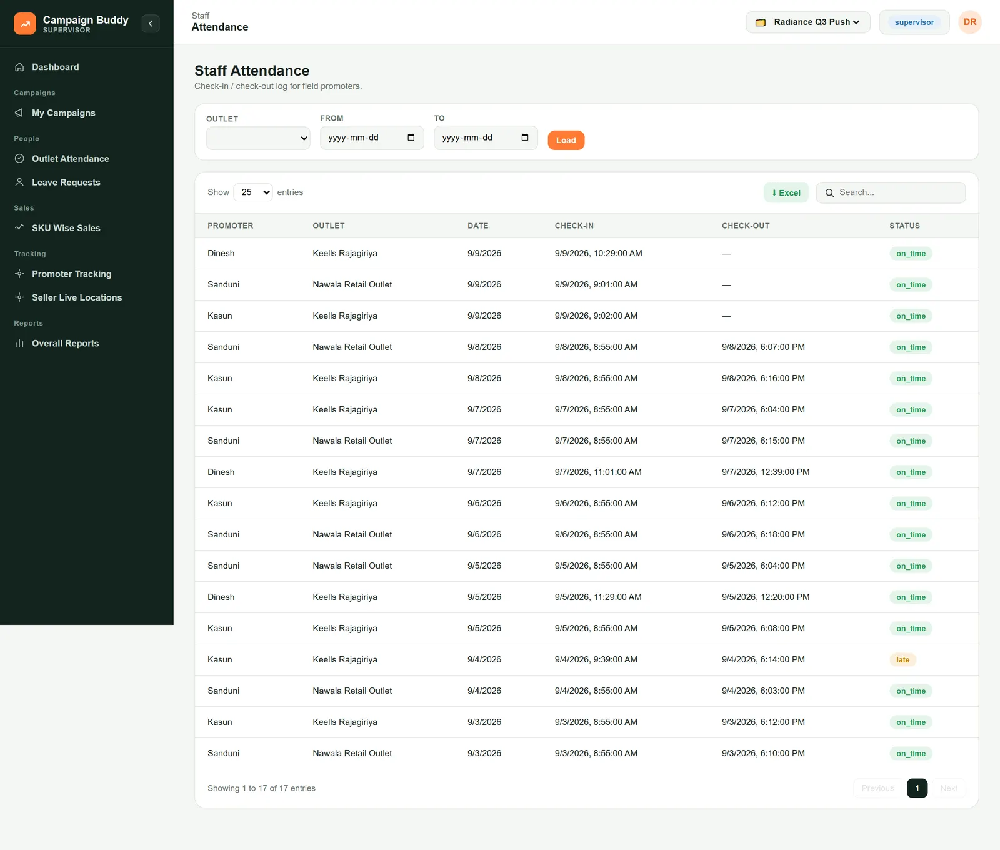
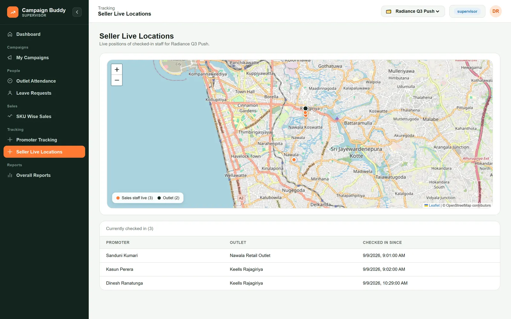
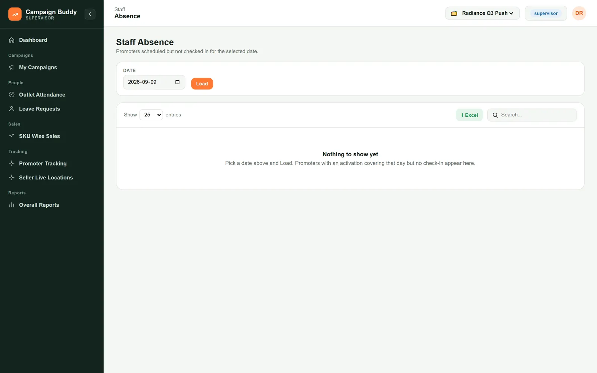
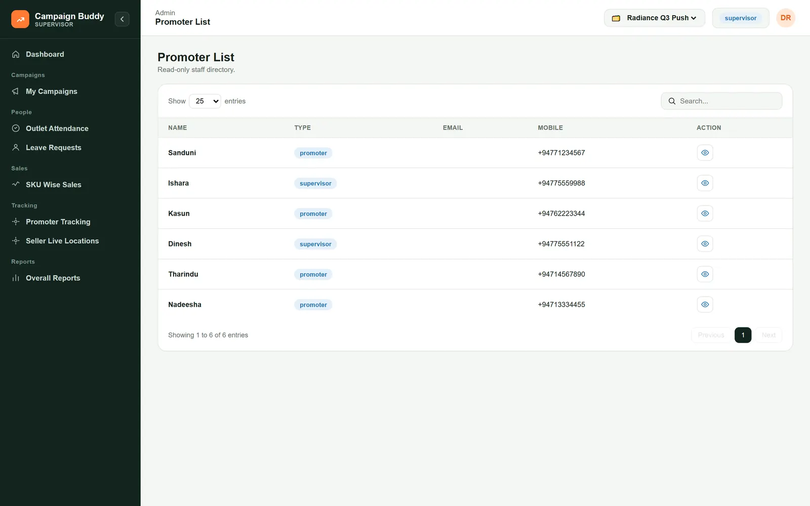
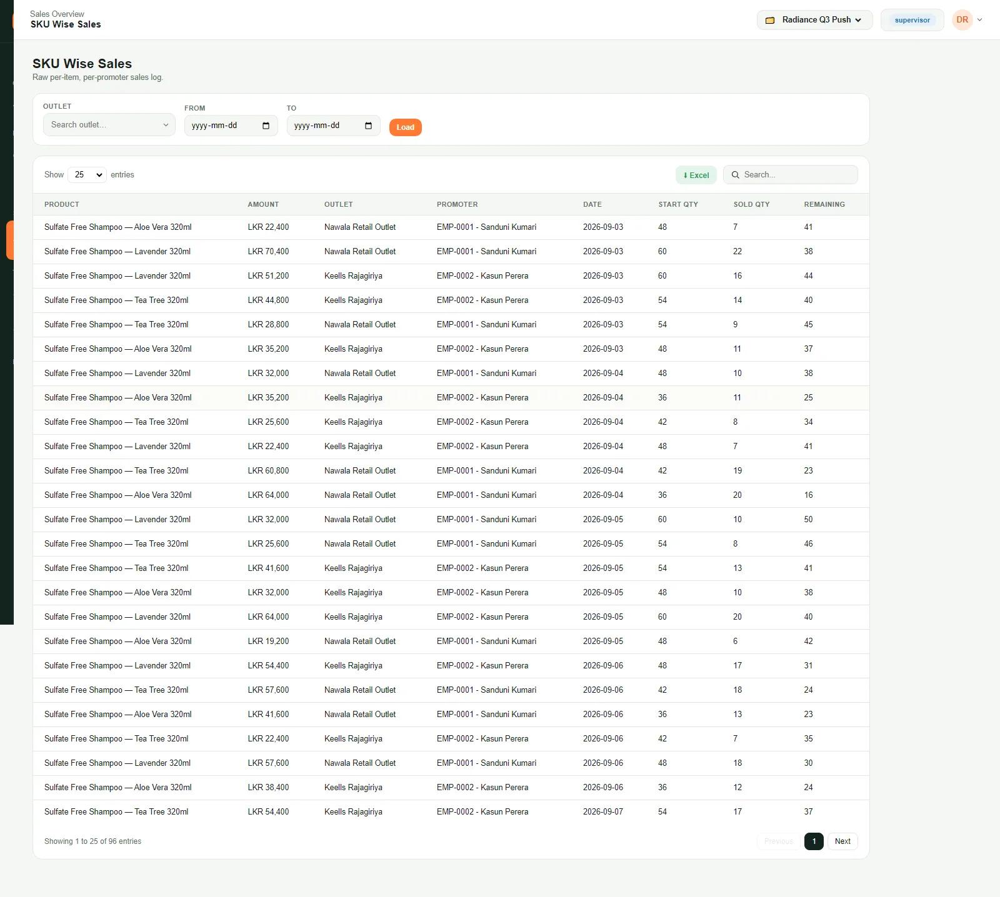
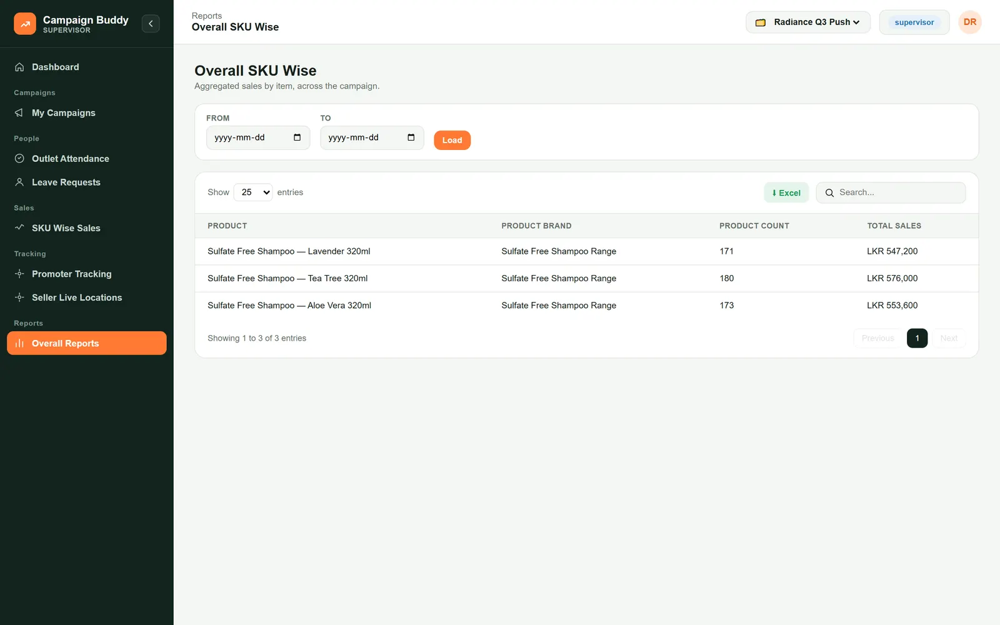
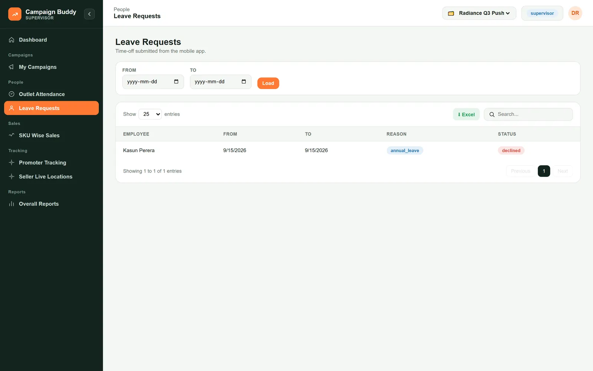
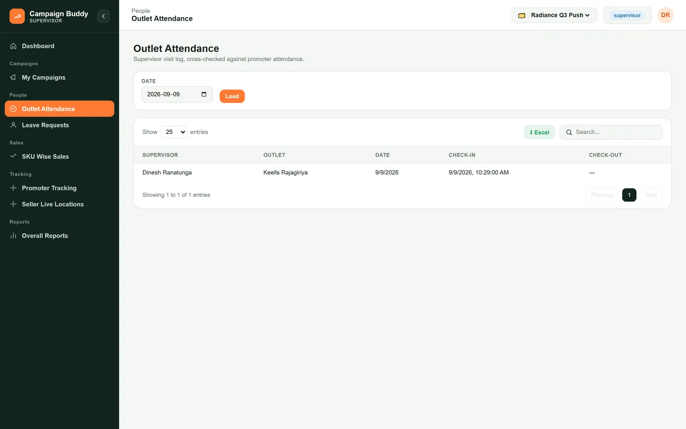

Supervisor guide
You work in two places. In the web portal your login is read-only and scoped to your assigned outlets on your campaign, use it to see who is on shift, who is late, what is selling, and where the gaps are. On the road, the Campaign Buddy app gives you a dedicated My Route screen — instead of a promoter's Home/Sales/Attendance/Performance tabs, you see today's outlet visits with a check-in/check-out button for each one, plus your planned route ahead.
01Sign in and get your bearings
Every time you open the portal
Sign in and get your bearings
-
Sign in with your username and password. If you cover more than one campaign, pick the right one from the campaign switcher in the top-right. The header always shows which campaign and how many of its outlets you can see.

-
Open My Campaigns for the list of activations you supervise, which promoter is at which outlet, and the dates. Tap the eye icon to see the detail of one.

02Start the day: attendance
First thing, before you set off
Start the day: attendance
-
Open Attendance. Each row is a check-in for one of your outlets, with the time and an on time or late badge. A row without a check-in time means the promoter has not started yet.

-
Filter by outlet and a date range and press Load to look back over the week.
Tip: a promoter who looks absent here may be checked in on another campaign, the one-open-shift rule means they can only be checked in one place at a time. Call before you assume the worst.
03Watch the live map
On the road, to see where your promoters are
Watch the live map
-
Open Seller Live Locations. Every promoter currently checked in shows on the map with their outlet, and the list below tells you since when. It refreshes on its own. A promoter who backgrounds the app stops updating until they reopen it, that is normal.

04Check who did not turn up
Mid-morning, once shifts should have started
Check who did not turn up
-
Open Absence and pick today's date. It lists every promoter who had an activation covering today but no check-in, and marks whether they are on leave or just not checked in.

-
"On leave" is already approved; nothing to do. "No check-in" is the one to chase. Flag anything unexplained to head office.
05Your promoters
To look up a contact or a detail
Your promoters
-
Open Promoter List for a read-only directory, name, type, home city, phone. Use Search to find someone. Details are edited by head office, not here.

06Review sales for your outlets
Any time, during the day or at the end
Review sales for your outlets
-
Open SKU Wise Sales for the row-by-row log, product, outlet, date, start quantity, sold and remaining, for your outlets only. Filter by date and export with Excel.

-
Open Overall Reports for the campaign totals per product, units and value, with a grand total.

07Your team's leave requests
To know who is off and when
Your team's leave requests
-
Open Leave Requests for the time-off requests from promoters who report to you, the reason, the dates, and whether they are awaiting approval, approved or declined.
Note: this view is read-only. Approvals are made in head office by the promoter's "reports to" person. Chase there if a decision is holding you up.
08Log your outlet visits
On the app, at each outlet you visit
Log your outlet visits
-
Open the Campaign Buddy app — the My Route tab lists every outlet you're assigned to visit today. Tap Check in on the one you've arrived at, and Check out when you leave; you can only be checked in at one outlet at a time, so check out before moving to the next. Below that, Planned route shows the fuller schedule head office set up for you.
-
Back in the portal, Outlet Attendance is your visit log, cross-checked against the promoters' own attendance for the same outlets. Pick a date and press Load.
